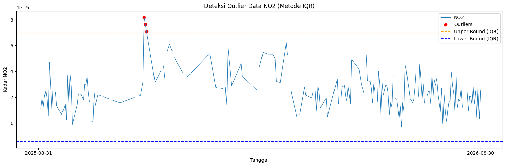
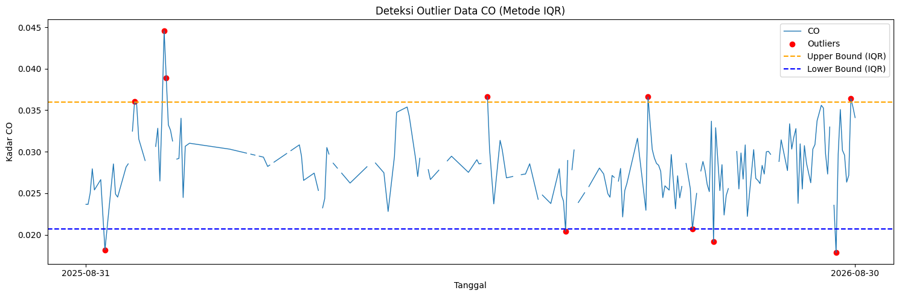
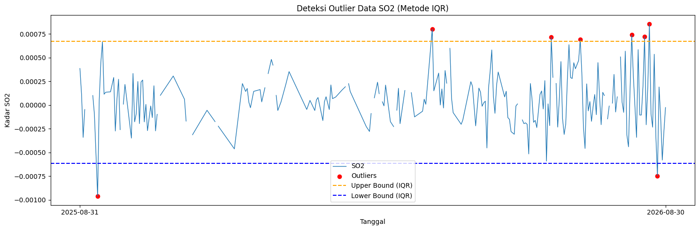
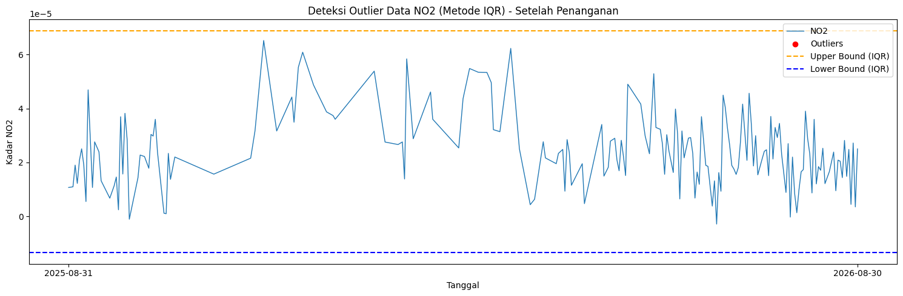
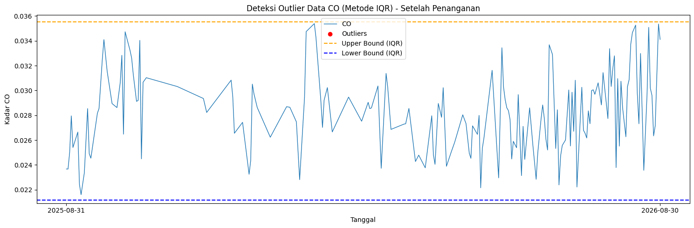
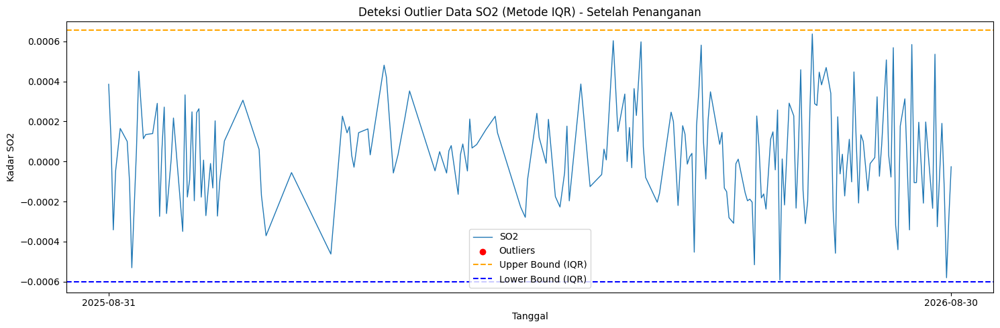

Preprocessing dan Ekstraksi Fitur#
Preprocessing: Penanganan Missing Value, Outliers dan Interpolasi#
Pada tahap Data Understanding, kita telah mengidentifikasi adanya missing values dan outliers. Untuk menangani masalah ini dan mempersiapkan data agar bisa diekstrak fiturnya secara berkesinambungan, kita menerapkan pembersihan data menggunakan metode Rentang Interkuartil (IQR) dan mengisi kekosongan data menggunakan interpolasi linier.
Deteksi Missing Value#
Deteksi missing value (data kosong atau hilang) bertujuan untuk mengidentifikasi seberapa banyak data yang tidak terekam dalam observasi. Mengetahui jumlah dan persentase kekosongan data sangat penting sebelum dilakukan proses penanganan (seperti interpolasi), agar kita dapat mengukur kualitas dataset secara keseluruhan.
import pandas as pd
df = pd.read_csv("nama_file_polutan.csv")
missing_value = df['nama_kolom_polutan'].isna().sum()
total_data = len(df)
persentase_missing = (missing_value / total_data) * 100
print(f"Jumlah missing value: {missing_value}")
print(f"Total data: {total_data}")
print(f"Persentase data missing: {persentase_missing:.2f}%")
NO2
Jumlah missing value: 30
Total data: 365
Persentase data missing: 8.22%
CO
Jumlah missing value: 34
Total data: 365
Persentase data missing: 9.32%
SO2
Jumlah missing value: 23
Total data: 365
Persentase data missing: 6.30%
Deteksi dan Visualisasi Outlier (Metode IQR)#
Metode Interquartile Range (IQR) digunakan untuk mengidentifikasi nilai-nilai yang menyimpang atau berada di luar batas kewajaran. Data polutan yang nilainya lebih rendah dari lower bound atau lebih tinggi dari upper bound diklasifikasikan sebagai outlier.
import pandas as pd
import numpy as np
import matplotlib.pyplot as plt
df = pd.read_csv("nama_file_polutan.csv")
df['date'] = pd.to_datetime(df['date'])
df = df.sort_values('date').reset_index(drop=True)
# Hitung IQR
Q1 = df['nama_kolom_polutan'].quantile(0.25)
Q3 = df['nama_kolom_polutan'].quantile(0.75)
IQR = Q3 - Q1
lower_bound = Q1 - 1.5 * IQR
upper_bound = Q3 + 1.5 * IQR
# Filter outlier
outliers_iqr = df[(df['nama_kolom_polutan'] < lower_bound) | (df['nama_kolom_polutan'] > upper_bound)]
print("Jumlah Outlier (IQR):", len(outliers_iqr))
print(outliers_iqr[['date', 'nama_kolom_polutan']].head())
NO2
Jumlah Outlier (IQR): 3
date NO2
87 2025-11-26 0.000082
88 2025-11-27 0.000076
89 2025-11-28 0.000071
CO
Jumlah Outlier (IQR): 11
date CO
9 2025-09-09 0.018195
23 2025-09-23 0.036034
37 2025-10-07 0.044585
38 2025-10-08 0.038909
190 2026-03-09 0.036642
SO2
Jumlah Outlier (IQR): 8
date SO2
11 2025-09-11 -0.000963
219 2026-04-07 0.000801
293 2026-06-20 0.000714
311 2026-07-08 0.000691
343 2026-08-09 0.000739
Visualisasi batas ambang IQR terhadap distribusi data untuk melihat outlier secara lebih jelas:
:tags: [hide-input]
import pandas as pd
import numpy as np
import matplotlib.pyplot as plt
df = pd.read_csv("nama_file_polutan.csv")
df['date'] = pd.to_datetime(df['date'])
df = df.sort_values('date').reset_index(drop=True)
# Hitung IQR
Q1 = df['nama_kolom_polutan'].quantile(0.25)
Q3 = df['nama_kolom_polutan'].quantile(0.75)
IQR = Q3 - Q1
lower_bound = Q1 - 1.5 * IQR
upper_bound = Q3 + 1.5 * IQR
outliers_iqr = df[(df['nama_kolom_polutan'] < lower_bound) | (df['nama_kolom_polutan'] > upper_bound)]
plt.figure(figsize=(15,5))
plt.plot(df['date'], df['nama_kolom_polutan'], label="nama_kolom_polutan", linewidth=1)
plt.scatter(outliers_iqr['date'], outliers_iqr['nama_kolom_polutan'],
color='red', marker='o', label="Outliers")
plt.axhline(upper_bound, color='orange', linestyle='dashed', label="Upper Bound (IQR)")
plt.axhline(lower_bound, color='blue', linestyle='dashed', label="Lower Bound (IQR)")
plt.title("Deteksi Outlier Data nama_kolom_polutan (Metode IQR)")
plt.xlabel("Tanggal")
plt.ylabel("Kadar nama_kolom_polutan")
plt.legend()
plt.tight_layout()
plt.xticks(
ticks=[df['date'].iloc[0], df['date'].iloc[-1]],
labels=[df['date'].iloc[0].strftime('%Y-%m-%d'),
df['date'].iloc[-1].strftime('%Y-%m-%d')]
)
plt.show()
NO2

CO

SO2

Penanganan Outlier, Melengkapi Tanggal, dan Interpolasi Data#
Setelah mendeteksi keberadaan outlier, langkah selanjutnya adalah menandainya sebagai nilai kosong (NaN). Karena pada data deret waktu terdapat banyak tanggal yang terlewat, kita melengkapi rentang waktunya (dari tanggal terawal hingga terakhir). Kemudian, metode interpolasi linier diterapkan pada keseluruhan dataset untuk mengisi nilai kosong (NaN) tersebut. Di akhir proses, teknik backward fill (bfill) serta forward fill (ffill) dimanfaatkan guna mengatasi nilai kosong pada bagian pinggir atau awalan dan akhiran rangkaian data yang tidak bisa diinterpolasi linier.
# Tandai outlier menjadi NaN
df['polutan_cleaned'] = df['polutan'].mask(
(df['polutan'] < lower_bound) | (df['polutan'] > upper_bound)
)
# Memasukkan data ke dalam rentang tanggal yang lengkap
df = df.set_index('date')
rentang_tanggal_lengkap = pd.date_range(start=df.index.min(), end=df.index.max(), freq='D')
df_lengkap = df.reindex(rentang_tanggal_lengkap)
# interpolasi linier pada NaN yang sudah dibuat (dari outlier & reindex)
df_lengkap['polutan_filled'] = df_lengkap['polutan_cleaned'].interpolate(method='linear')
df_lengkap['polutan_filled'] = df_lengkap['polutan_filled'].bfill().ffill()
# Kembalikan index menjadi kolom
df_lengkap.index.name = 'date'
df_lengkap.reset_index(inplace=True)
# Simpan data yang telah dibersihkan dan diinterpolasi ke file CSV baru
df_polutan_Kwanyar = pd.DataFrame({
"date": df_lengkap['date'],
"polutan": df_lengkap['polutan_filled']
})
df_polutan_Kwanyar.to_csv("nama_hasil_file_polutan_cleaned.csv", index=False)
Grafik setelah penanganan Outlier dan Penambahan Tanggal
import pandas as pd
import numpy as np
import matplotlib.pyplot as plt
df = pd.read_csv("nama_file_polutan_final.csv")
df['date'] = pd.to_datetime(df['date'])
df = df.sort_values('date').reset_index(drop=True)
# Hitung IQR
Q1 = df['nama_kolom_polutan'].quantile(0.25)
Q3 = df['nama_kolom_polutan'].quantile(0.75)
IQR = Q3 - Q1
lower_bound = Q1 - 1.5 * IQR
upper_bound = Q3 + 1.5 * IQR
# Filter outlier
outliers_iqr = df[(df['nama_kolom_polutan'] < lower_bound) | (df['nama_kolom_polutan'] > upper_bound)]
print("Jumlah Outlier (IQR):", len(outliers_iqr))
print(outliers_iqr[['date', 'nama_kolom_polutan']].head())
NO2
Jumlah Outlier (IQR): 0
Empty DataFrame
Columns: [date, NO2]
Index: []
CO
Jumlah Outlier (IQR): 0
Empty DataFrame
Columns: [date, CO]
Index: []
SO2
Jumlah Outlier (IQR): 0
Empty DataFrame
Columns: [date, SO2]
Index: []
Visualisasi batas ambang IQR terhadap distribusi data untuk melihat outlier secara lebih jelas:
import pandas as pd
import numpy as np
import matplotlib.pyplot as plt
df = pd.read_csv("nama_file_polutan_final.csv")
df['date'] = pd.to_datetime(df['date'])
df = df.sort_values('date').reset_index(drop=True)
# Hitung IQR
Q1 = df['nama_kolom_polutan'].quantile(0.25)
Q3 = df['nama_kolom_polutan'].quantile(0.75)
IQR = Q3 - Q1
lower_bound = Q1 - 1.5 * IQR
upper_bound = Q3 + 1.5 * IQR
outliers_iqr = df[(df['nama_kolom_polutan'] < lower_bound) | (df['nama_kolom_polutan'] > upper_bound)]
plt.figure(figsize=(15,5))
plt.plot(df['date'], df['nama_kolom_polutan'], label="nama_kolom_polutan", linewidth=1)
plt.scatter(outliers_iqr['date'], outliers_iqr['nama_kolom_polutan'],
color='red', marker='o', label="Outliers")
plt.axhline(upper_bound, color='orange', linestyle='dashed', label="Upper Bound (IQR)")
plt.axhline(lower_bound, color='blue', linestyle='dashed', label="Lower Bound (IQR)")
plt.title("Deteksi Outlier Data nama_kolom_polutan (Metode IQR) - Setelah Penanganan")
plt.xlabel("Tanggal")
plt.ylabel("Kadar nama_kolom_polutan")
plt.legend()
plt.tight_layout()
plt.xticks(
ticks=[df['date'].iloc[0], df['date'].iloc[-1]],
labels=[df['date'].iloc[0].strftime('%Y-%m-%d'),
df['date'].iloc[-1].strftime('%Y-%m-%d')]
)
plt.show()
NO2

CO

SO2

Ekstraksi Fitur Deret Waktu (Time Series)#
Dengan data deret waktu polutan udara yang konsisten (tanpa tanggal hilang dan tanpa outlier), kita dapat melangkah ke ekstraksi berbagai fitur statistik, temporal, maupun spektral. Fitur-fitur ini sangat berguna sebagai parameter input yang merepresentasikan karakteristik trend harian polutan ke dalam model machine learning maupun deep learning.
Kita akan memanfaatkan modul pustaka Python bernama tsfel (Time Series Feature Extraction Library) guna mempermudah proses komputasi serta standarisasi ragam tipe fitur.
Berikut adalah sintaks kode implementasi untuk mengekstraksi sebanyak 68 fitur otomatis pada deret data NO₂ (dan berlaku perlakuan serupa untuk unsur polutan lainnya):
import pandas as pd
import numpy as np
import inspect
import tsfel.feature_extraction.features as tsfel_features
# ---------- 1. Muat data yang sudah dibersihkan ----------
df = pd.read_csv('nama_file_polutan_cleaned.csv')
df['date'] = pd.to_datetime(df['date'])
df = df.sort_values('date').reset_index(drop=True)
target_pollutant = 'nama_polutan'
# Pastikan data di-casting ke tipe numerik.
df[target_pollutant] = pd.to_numeric(df[target_pollutant], errors='coerce')
# Interpolasi terakhir untuk berjaga-jaga apabila terdapat sisa format nan
df_clean = df.set_index('date').interpolate(method='time').ffill().bfill()
fs = 1
signal_1d = df_clean[target_pollutant].astype(float).values
# ---------- 2. Inisiasi 68 Daftar Fitur TSFEL ----------
FEATURE_LIST = """abs_energy auc autocorr average_power calc_centroid calc_max calc_mean
calc_median calc_min calc_std calc_var dfa distance ecdf ecdf_percentile ecdf_percentile_count
ecdf_slope entropy fundamental_frequency higuchi_fractal_dimension hist_mode human_range_energy
hurst_exponent interq_range kurtosis lempel_ziv lpcc max_frequency max_power_spectrum
maximum_fractal_length mean_abs_deviation mean_abs_diff mean_diff median_abs_deviation
median_abs_diff median_diff median_frequency mfcc mse negative_turning neighbourhood_peaks
petrosian_fractal_dimension pk_pk_distance positive_turning power_bandwidth rms skewness slope
spectral_centroid spectral_decrease spectral_distance spectral_entropy spectral_kurtosis
spectral_positive_turning spectral_roll_off spectral_roll_on spectral_skewness spectral_slope
spectral_spread spectral_variation spectrogram_mean_coeff sum_abs_diff wavelet_abs_mean
wavelet_energy wavelet_entropy wavelet_std wavelet_var zero_cross""".split()
print("Jumlah fitur yang diminta:", len(FEATURE_LIST))
# ---------- 3. Fungsi ekstraksi dan penyeragaman output ----------
# Fungsi bantuan (helper) merubah output multivariat TSFEL menjadi float tunggal/skalar
def to_scalar(result):
if isinstance(result, dict) and "values" in result:
result = result["values"]
if isinstance(result, (list, tuple, np.ndarray)):
arr = np.asarray(result, dtype=float)
return float(np.nanmean(arr))
return float(result)
# Fungsi map pemanggilan fungsi TSFEL
def extract_one(fn_name, signal, fs):
fn = getattr(tsfel_features, fn_name)
params = inspect.signature(fn).parameters
if "fs" in params:
result = fn(signal, fs)
else:
result = fn(signal)
return to_scalar(result)
# Lakukan ekstraksi iteratif pada fitur
row = {}
for fn_name in FEATURE_LIST:
row[fn_name] = extract_one(fn_name, signal_1d, fs)
extracted_features_final = pd.DataFrame([row])
print(f"Berhasil! Jumlah fitur yang diekstrak pada {target_pollutant}: {extracted_features_final.shape[1]}")
# Export hasil ke file CSV
extracted_features_final.to_csv(f'nama_hasil_ekstraksi_fitur_TSFEL.csv', index=False)
Data hasil ekstraksi fitur menggunakan TSFEL
NO2
| abs_energy | auc | autocorr | average_power | calc_centroid | calc_max | calc_mean | calc_median | calc_min | calc_std | ... | spectral_spread | spectral_variation | spectrogram_mean_coeff | sum_abs_diff | wavelet_abs_mean | wavelet_energy | wavelet_entropy | wavelet_std | wavelet_var | zero_cross | |
|---|---|---|---|---|---|---|---|---|---|---|---|---|---|---|---|---|---|---|---|---|---|
| 0 | 3.561887e-07 | 0.010139 | 13.0 | 9.785405e-10 | 173.038786 | 0.000065 | 0.000028 | 0.000026 | -0.000003 | 0.000014 | ... | 0.15309 | 0.262819 | 2.946177e-10 | 0.002209 | 0.000001 | 0.000018 | 2.126274 | 0.000018 | 3.696060e-10 | 6.0 |
1 rows × 68 columns
CO
| abs_energy | auc | autocorr | average_power | calc_centroid | calc_max | calc_mean | calc_median | calc_min | calc_std | ... | spectral_spread | spectral_variation | spectrogram_mean_coeff | sum_abs_diff | wavelet_abs_mean | wavelet_energy | wavelet_entropy | wavelet_std | wavelet_var | zero_cross | |
|---|---|---|---|---|---|---|---|---|---|---|---|---|---|---|---|---|---|---|---|---|---|
| 0 | 0.295985 | 10.316484 | 3.0 | 0.000813 | 180.354669 | 0.035389 | 0.028343 | 0.028357 | 0.021601 | 0.00275 | ... | 0.126886 | 0.593124 | 0.000012 | 0.490562 | 0.001608 | 0.0067 | 2.122624 | 0.00648 | 0.000048 | 0.0 |
1 rows × 68 columns
SO2
| abs_energy | auc | autocorr | average_power | calc_centroid | calc_max | calc_mean | calc_median | calc_min | calc_std | ... | spectral_spread | spectral_variation | spectrogram_mean_coeff | sum_abs_diff | wavelet_abs_mean | wavelet_energy | wavelet_entropy | wavelet_std | wavelet_var | zero_cross | |
|---|---|---|---|---|---|---|---|---|---|---|---|---|---|---|---|---|---|---|---|---|---|
| 0 | 0.000019 | 0.058176 | 2.0 | 5.198692e-08 | 201.287422 | 0.000637 | 0.000033 | 0.000036 | -0.000592 | 0.000225 | ... | 0.146254 | 0.154005 | 8.342241e-08 | 0.055033 | 0.000001 | 0.000328 | 2.154088 | 0.000328 | 1.141906e-07 | 103.0 |
1 rows × 68 columns